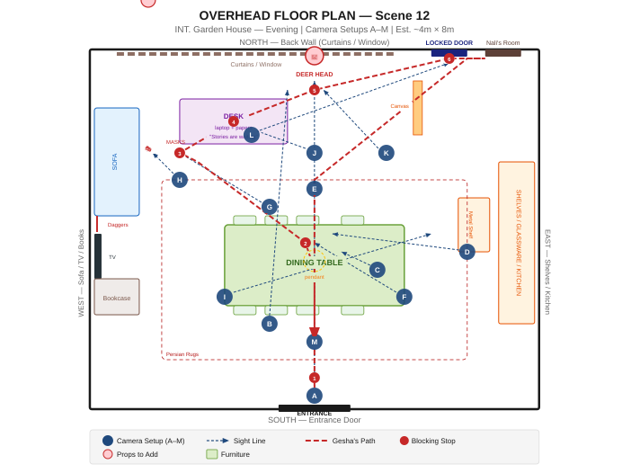

Emotional Structure — 3 Movements
Location
INT. Garden House — Evening
Warm amber interior. Low evening sun through west windows. Practical pendant lamps. A space that feels lived in by someone you don't fully know.
Color Coding Key
Key Challenges
- Shot 12.1 — complex tracking take, rehearse extensively
- Locked door moment (12.14) — performance is everything
- LED strip on back wall (5000K) must be OFF
- Gesha's bags must appear in correct scene position
Scene Position
EXT. Garden
INT. Garden House
EXT. Garden
CONTINUOUS — no time gap. Clothes show wear from Scene 7 onward.
Shot Breakdown
All 15 shots. Click any row to expand full details.
| Shot | Style | Lens | Characters | Duration | Type |
|---|
Floor Plan
Overhead view — 13 camera setups (A–M). Click a setup button to highlight which shots use it.

Setup Details
Shooting Schedule
11 blocks — estimated 5-hour shoot day. Two 15-minute breaks built in.
Lighting
Design philosophy and shot-by-shot notes for Scene 12.
Core Philosophy
"If it looks lit, it's wrong."
The house should look like it lights itself. All film lights are motivated by practical sources. Warm amber from the center radiates out to cooler, dimmer zones near walls. The room is alive with hierarchy — brightest where the eye should look, dimmer at the edges where the unknown lives.
Color Temperature Map
Practical Lights (5)
- 3 pendant lamps (ceiling) — 2700K warm LED
- Shelf accent lights — 2700-3000K
- Desk lamp — warm incandescent or LED
Film Lights (4)
- 2× LED panels — key/fill, tungsten mode
- 1× Dedolight — deer head eye glint
- 1× Battery LED — mask area practical motivation
Shot-by-Shot Lighting
Sound
Design philosophy, recording approach, and key moments for Scene 12.
Golden Rule
"Silence is the third actor."
The house itself communicates through sound — or its absence. Every practical sound effect is a story beat. Sound design post-production will layer an almost subliminal ambient bed under the room's silences.
Recording Setup — 4 Track
Primary dialogue
Backup + movement
Backup + movement
Ambient / atmos
Key Sound Moments
Post-Production Sound Design
Ambient Bed
20-40Hz sub-bass — always present but subliminal. Created from room resonance recording of location. Should make audience vaguely uncomfortable without knowing why.
Mask Reveal (12.7–12.8)
Low-end swell as camera holds on masks. No obvious stinger. The dread is architectural. Barely perceivable upward pitch shift on ambient bed.
Deer POV (12.5)
Tinnitus-adjacent tone, 6-8kHz, ~-30dB under dialogue threshold. Simulates the experience of being watched. Not horror SFX — neurological discomfort.
Paper / Text Isolation
"Stories are waiting" — the paper's rustle should feel louder than it is. Use gentle spectral expansion in post to make the texture present in the mix.
Props
Three categories with status tracking. Check items off as confirmed for shoot day.
Wardrobe
Character looks, outfit details, and continuity notes for Scene 12.
At the end of Scene 12, Gesha takes her bags into Nali's room to change. She exits in Scene 14 wearing a short floral dress — warmer, more feminine, and notably different from her arrival look. This signals a shift in her relationship to the space.
Continuity: Outfit A must be carefully documented (photo reference) so it can be matched if any Scene 11 pickups are needed.
Continuity Notes
- Both characters' clothes should show a full day of wear — not freshly pressed. Scene 7 is the morning reference.
- Gesha's sunglasses must be on her head throughout Scene 12 — she puts them on to leave in Scene 13.
- Nali's shirt may have one untucked section — intentional. Do not correct between takes.
- Gesha's bags must be identical in Scene 11 and Scene 12 — same straps, same position of buckles.
Continuity
Scene position context and incoming/outgoing continuity requirements.
Scene Flow
Arrival
Evening
Nali feeds dog
CONTINUOUS — no time gap between scenes. All three scenes happen in the same unbroken evening.
Incoming from Scene 11
Outgoing to Scene 13
Cross-Scene Clothing Reference
Both characters' clothes originate in Scene 7 (morning). By Scene 12 (evening), they should show approximately 10-12 hours of wear:
- No visible stains — they haven't been physically active
- Slight wrinkling, especially at elbows and waist
- Hair has loosened from morning styling
- Gesha's mascara is fully intact — she has not cried or been rained on
Locked Door — Future Payoff
THE SEED: The locked door in Shot 12.14 must be established without overselling it. It pays off in a later scene. The camera should not linger or add visual emphasis beyond what the story requires in this moment. Gesha's look to Nali is the content — hold on her face, not the door.
Ensure the door and its lock mechanism is art-directed and consistent with later appearances.